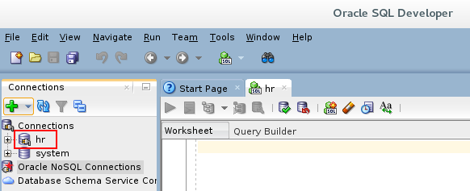
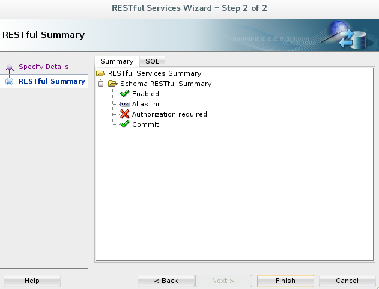
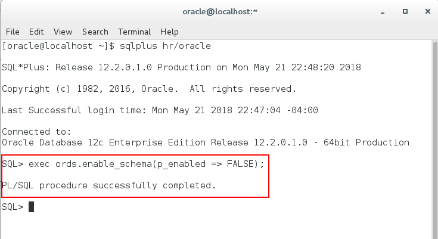

Oracle Application Express 18.1: Using REST Enabled SQL Service
Reference (2 of 4)
Before You Begin
This 10 minute tutorial shows you how to create a connection to
the hr schema in Oracle SQL Developer. This is the second
tutorial in the series Oracle Application Express 18.1: Using
REST Enabled SQL Service Reference. Read the tutorials in
sequence:
In this OBE, you will learn how to create a connection to the
hr schema, and REST enable the hr schema.
Note: You can REST enable the hr schema in two ways -
using the SQL Developer GUI and using the command line
interface.
What Do You Need?
Install the latest version of Oracle VM VirtualBox
Download and import the Database App Development VM in to
the Oracle VM VirtualBox
Oracle SQL Developer 4.2
Oracle Database 12c
Oracle Application Express 18.1 Note: SQL Developer 4.2, Oracle Database 12c, and
Oracle Application Express 18.1 are installed in the Database
App Development VM
Create
a Connection to the hr Schema in SQL Developer
To create a connection to the hr schema:
Right click the SQL Developer icon and click Open.
Click Save and then click Connect
to create the connection to the hr schema. The connection hr
is now displayed under the Connections pane in Oracle SQL
Developer. This completes the task of creating a connection to
the hr schema.  Description
of the illustration hr_connection.png
Enable
RESTful Services for hr Schema in SQL Developer GUI
To enable RESTful service for the hr schema using GUI:
In Oracle SQL Developer, right click hr
under Connections in the Connections pane.
In the RESTful Services Wizard - Step 2 of 2 dialog, the
Summary tab displays the summary of the RESTful service, such
as the alias, status, authorization and so on. Click SQL
tab.
 Description
of the illustration restful_services_wizard_2.png
Enable
RESTful Services Schema by Using the Command Line Interface
Using the command line is an alternative to using SQL Developer
for those who prefer command line tools to graphical user
interfaces. In the previous section, you enabled the hr
schema using SQL Developer GUI. If you prefer command line tools
to a graphical user interface, then you can enable the RESTful
schema using a command line interface.
In this section you will use a command line interface to first
disable the previously enabled RESTful schema and then enable it
again. Step 3 shows you how to disable the RESTful schema.
To enable RESTful schema using the command line interface:
Right click on your VM desktop and click Open
Terminal.
Since you already REST enabled the hr schema, you first need
to disable it and then enable it again. To disable the RESTful
schema, type exec ords.enable_schema(p_enabled =>
FALSE); and press Enter.
 Description
of the illustration cli_disable_schema.png

 Before You Begin
Before You Begin Create
a Connection to the hr Schema in SQL Developer
Create
a Connection to the hr Schema in SQL Developer  Enable
RESTful Services for hr Schema in SQL Developer GUI
Enable
RESTful Services for hr Schema in SQL Developer GUI Enable
RESTful Services Schema by Using the Command Line Interface
Enable
RESTful Services Schema by Using the Command Line Interface